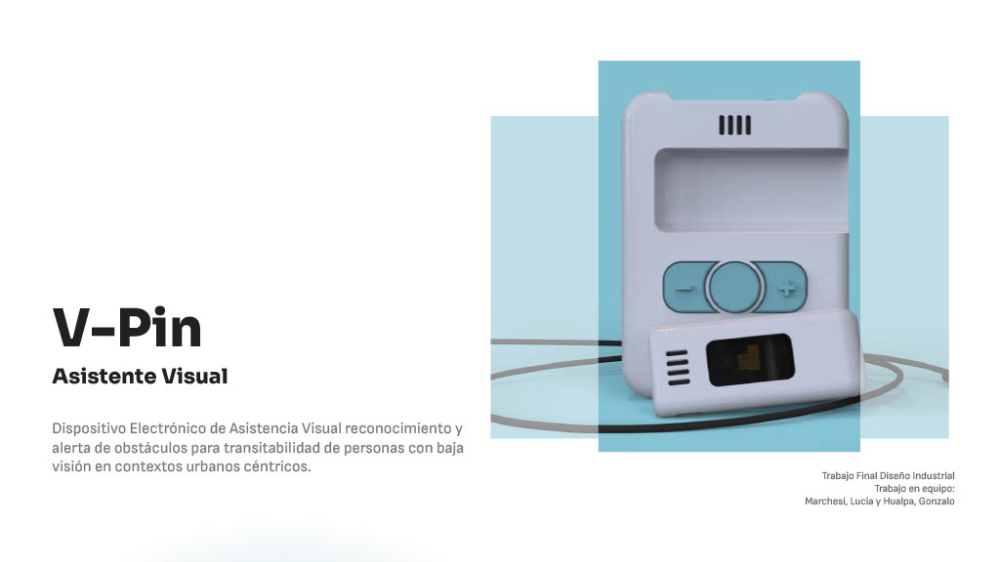
FINAL DEGREE PROJECT · ACCESSIBLE MOBILITY · ASSISTIVE DEVICE
V-Pin
Project overview
V-Pin was conceived as a device for safer and more autonomous transit for people with low vision. The project moves beyond static accessibility aids and focuses on mobility in motion: detecting obstacles, interpreting the environment and translating spatial information into immediate verbal guidance. More than a single object, it is a proposal about how assistive technology can be more integrated, understandable and usable in everyday life.
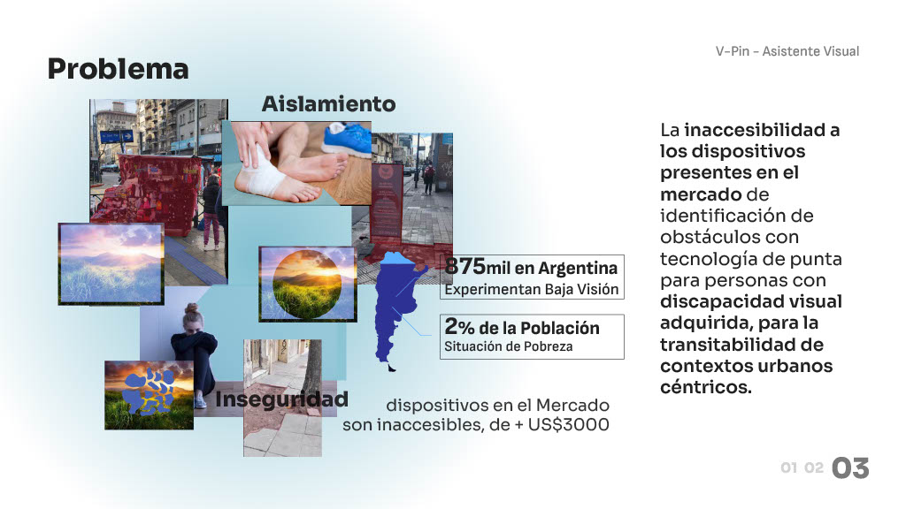
The challenge
The starting point of the project was the need to rethink accessible mobility from a product design perspective. Instead of focusing only on reading assistance or object recognition, V-Pin addresses the problem of moving through space safely and independently. This meant designing not only for detection, but also for clarity, reaction time, portability and confidence in use.
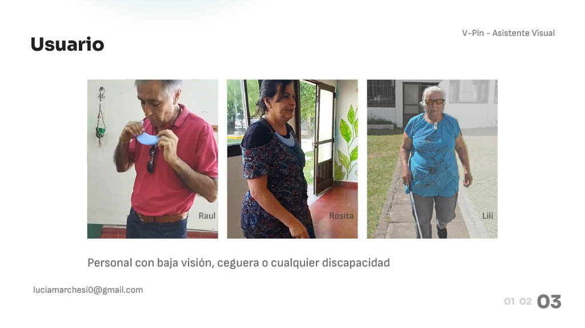
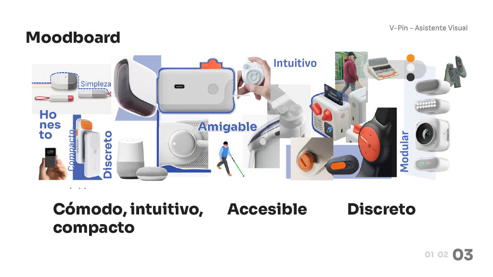
How it works
V-Pin combines a distance sensor and a camera module to detect obstacles and identify their type. This information is then translated into voice commands, creating a direct communication channel between the device and the user. The system integrates distance reading and obstacle recognition in a compact format, helping the user understand the surrounding space in a clearer and more immediate way.
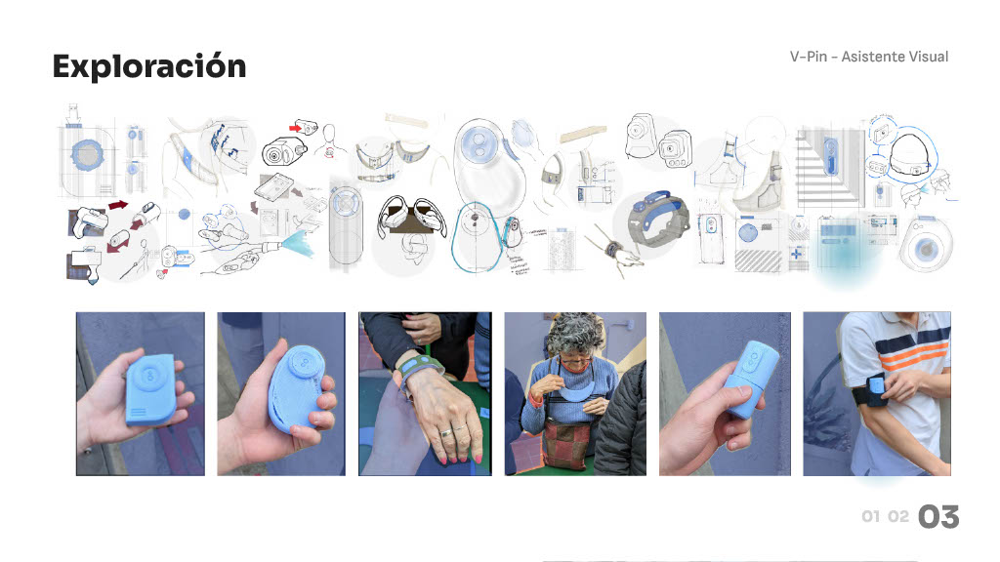
Process
The project is developed as an iterative validation process in context, involving real users and stakeholders from the production environment. Through direct observation, dialogue, and successive testing, design decisions are continuously challenged and refined.
Rather than validating assumptions in isolation, the process places them in real-use scenarios, using feedback as an active input that guides the project. This approach not only refines the solution, but also allows the problem itself to be redefined throughout the development.
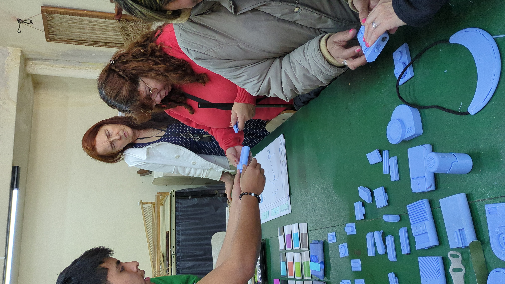
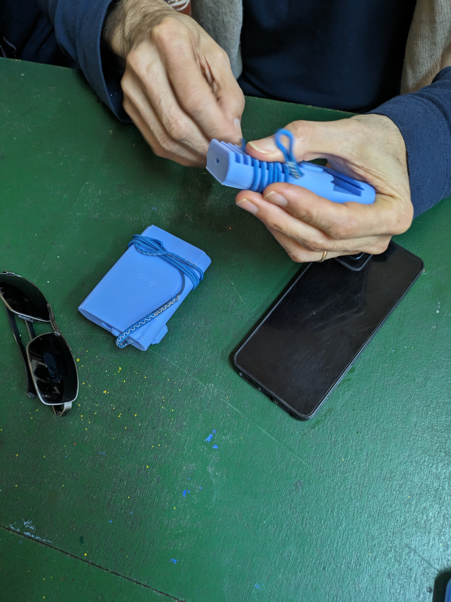
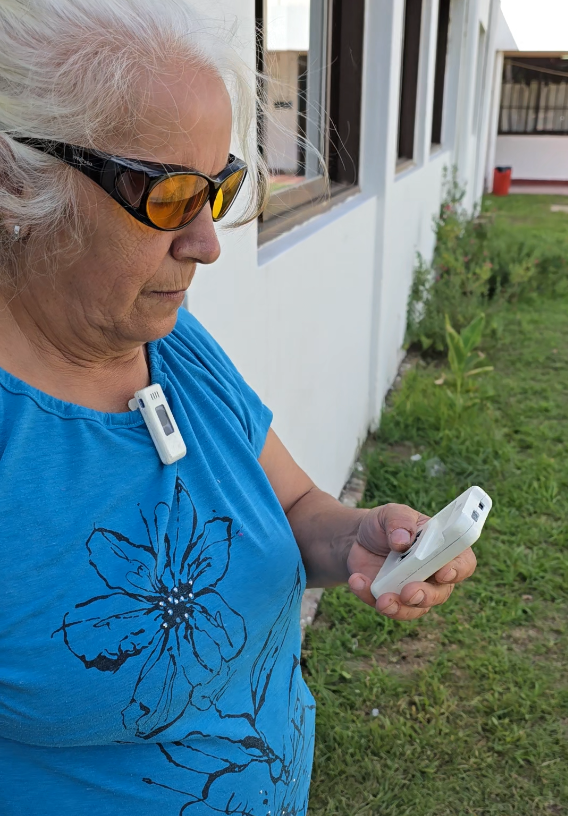
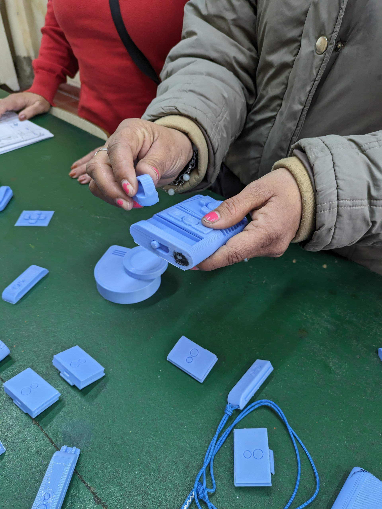
Design decisions
One of the core design decisions was to avoid making the device feel oversized, cumbersome or visually intimidating. The proposal was developed as a compact, modular and lightweight object designed to improve comfort and ease of use. Internal magnets allow both modules to attach quickly and securely into a single unit, making storage and transport easier while reinforcing the project’s emphasis on portability.
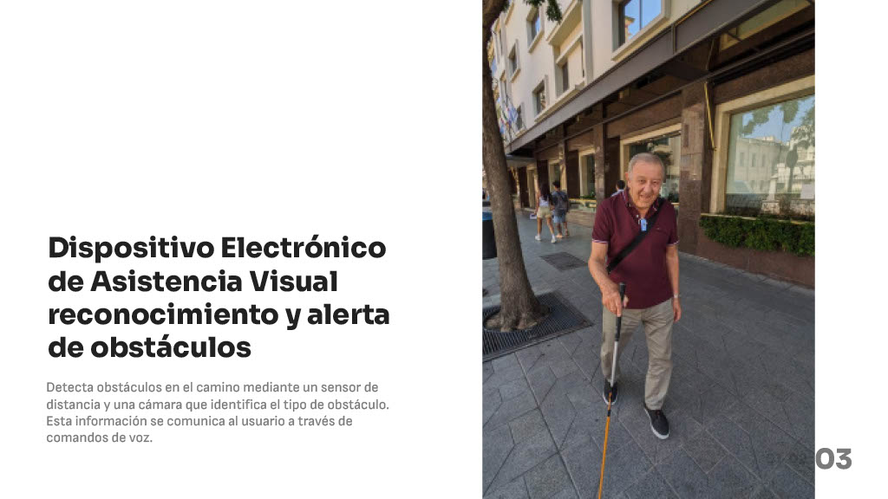
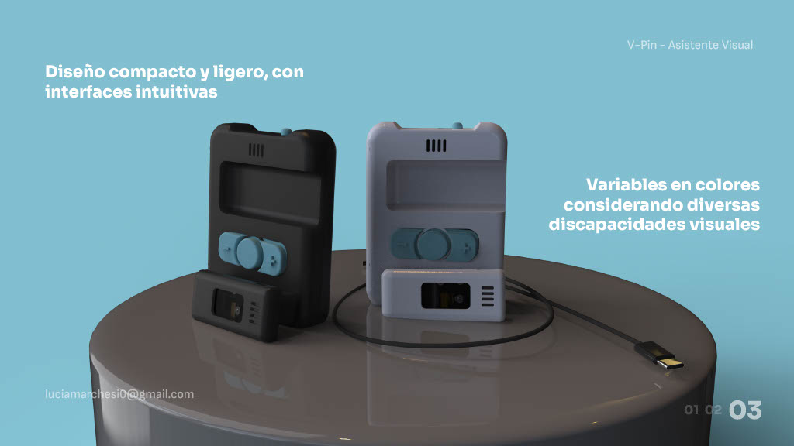
Technical development
V-Pin was developed with attention to both performance and feasibility. The proposal considers voice alert output, battery autonomy, ABS housings, and a manufacturing logic based on plastic injection and laser cutting for standardised parts. Its internal architecture was approached as a system, carefully organising components such as speakers, processor, interface, camera, sensor and fastening elements rather than treating them as secondary details.
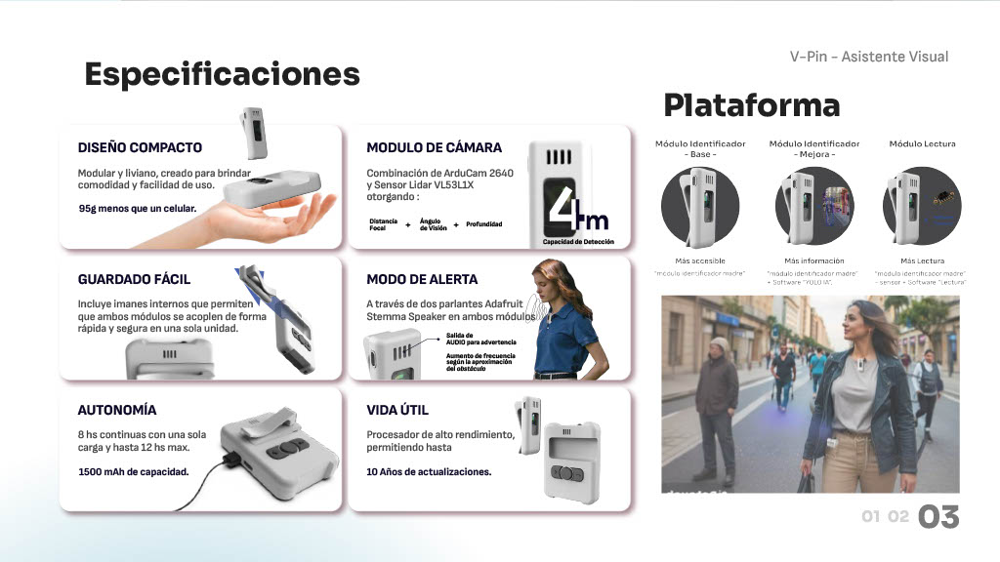
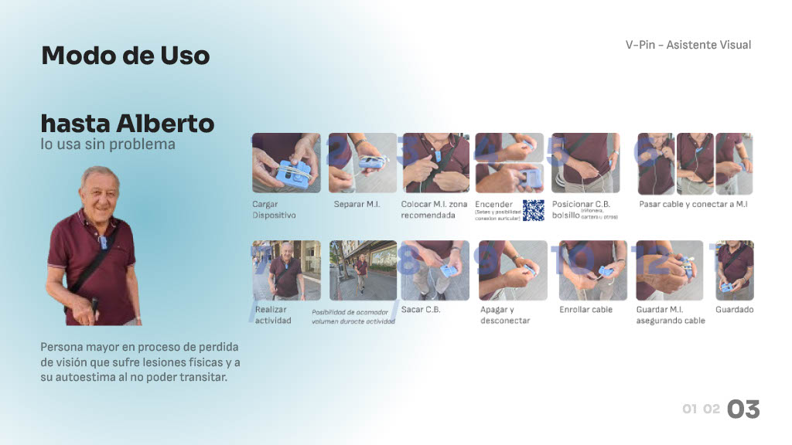
Context and validation
A fundamental part of the project involved connecting the development process with a real accessibility context through the people at Instituto Julián Vaquero. That dimension helped ground the project beyond formal speculation, pushing the proposal to respond to actual use conditions, communication needs and user expectations. This made the decision-making process more rigorous, because each adjustment had to make sense not only technically, but also in relation to real experience.
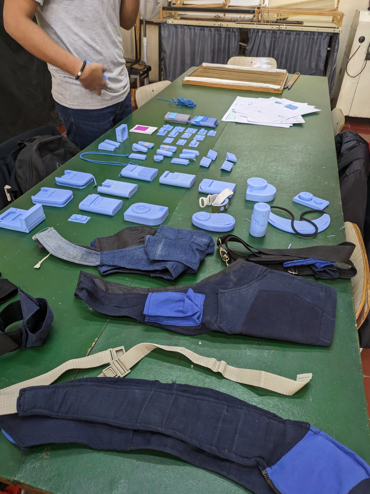
Positioning and proposal
The project also explored the proposal from a strategic angle, positioning V-Pin within a field that still lacks strong and widely recognised product references for accessible transit. Alongside the functional and technological development, the project considered feasibility, value proposition and market opportunity, aiming to frame the device not only as a useful tool but also as a realistic product concept.
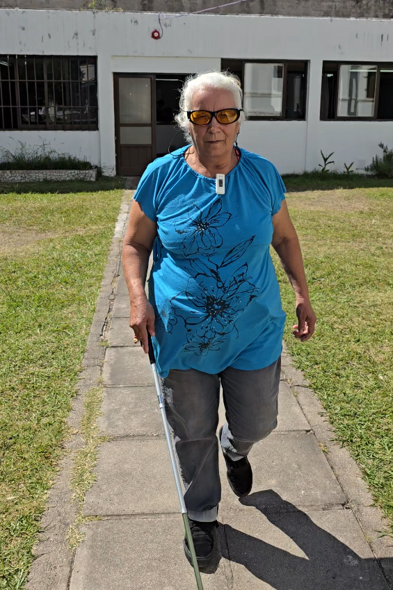
Project documents
As a final degree project, V-Pin was developed with supporting documentation that expands the project beyond the portfolio page itself. The material currently available includes the synthesis boards and final model documentation.
Gallery
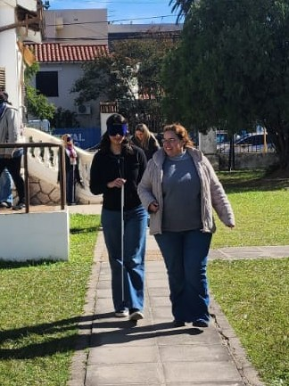
Reflection
V-Pin represents a moment where research, technological integration and design judgement came together with unusual clarity. As a final degree project, it was not only about arriving at a resolved object, but about demonstrating the ability to frame a problem, develop criteria, make decisions and communicate a complete proposal. That is what gives the project its weight within my portfolio.